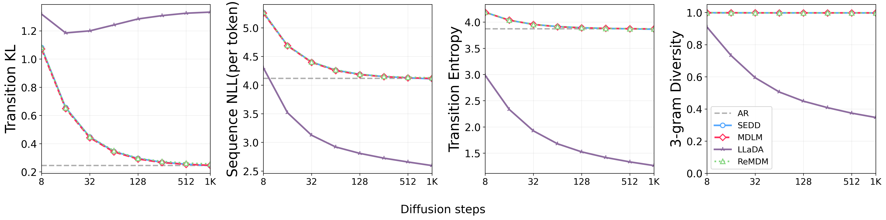

Preprint 2026  Is Your Diffusion Sampler Actually Correct? A Sampler-Centric Evaluation of Discrete Diffusion Language Models Luhan Tang, Longxuan Yu, Shaorong Zhang, Greg Ver Steeg Preprint, 2026 PDF
Preprint 2026 Generation Order and Parallel Decoding in Masked Diffusion Models: An Information-Theoretic Perspective Shaorong Zhang, Longxuan Yu, Rob Brekelmans, Luhan Tang, Salman Asif, Greg Ver Steeg Preprint, 2026 PDF